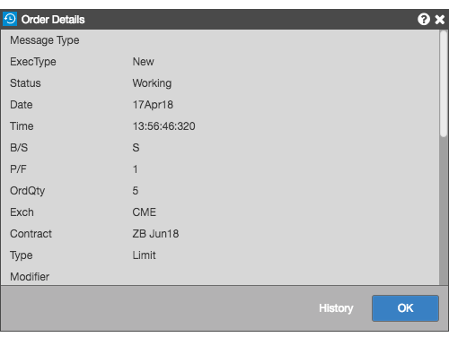
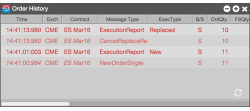

To display the order details, select an order and click icon.

You can also display all of the orders and order updates due to trades or manual order changes. To display the order's historical activity, click History.
